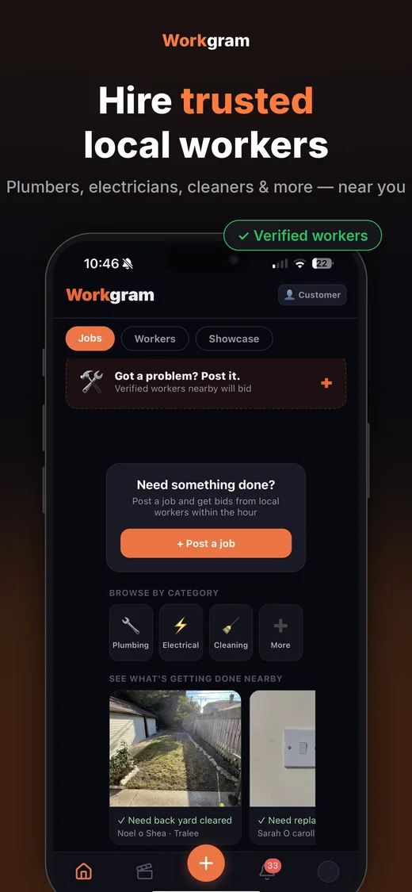

Workgram started with a simple frustration: in Kerry, finding a tradesperson you could actually trust often came down to luck — a name scrawled on paper, a number passed between neighbours, hoping for the best.
Illustrative photography
Every tradesperson deserves better.
Whether you've twenty years in the trade or you're just starting out, your work should speak for itself — not buried under someone else's advertising budget. Every completed job deserves an equal shot at winning the next one.
Every customer deserves to know.
Hiring someone into your home is a genuine act of trust. You see exactly who you're hiring before you ever say yes — their real, verified work, their actual reviews, their certifications.
Fair only works both ways.
Every payment is held securely until both sides are genuinely happy. The worker's paid properly for real work done. The customer only pays once the job is actually right.
Kerry-built, Kerry-first. This is Workgram.
How it works
Your guide to Workgram.
Every step, for whoever’s hiring and whoever’s working.
01
Start with your job
Open Workgram and follow the customer journey. On the Jobs screen, choose “Post a job” to begin.
02
Describe what you need
Enter the problem and details, check the location, add useful photos and choose a category. Add a budget if you want to, then review before posting.
03
Review the response
Once your job is live, review the offers you receive. Compare the scope, price and availability before deciding.
04
Get to know the worker
Open the worker’s profile. Review their experience, verification information, portfolio and reviews. Use chat to clarify what is included.
05
Choose and check the payment
Agree the work and timing. Check the total and any fees shown in the app before accepting and completing its payment steps.
06
Stay in touch
Use the conversation to arrange access and timing. When tracking is available for your accepted job, follow the worker’s progress.
07
Check the result and review
Inspect the finished work before confirming completion. Leave an honest review. Use the available support or dispute process if something needs attention.
See it for yourself
Watch it in action.
Follow the chapters, or press Play tour. The screen changes as you explore.
Illustrative app walkthrough. Some example details have been edited.

Screen to add
The matching app screenshot will appear here.
Founding tradespeople
0% platform fee. Forever.
Kerry’s founding tradespeople pay 0% forever. Not a launch offer — a promise.
Sign up during the founding cohort and your platform fee is locked at zero for as long as you work on Workgram. No fine print, no revisiting it later.